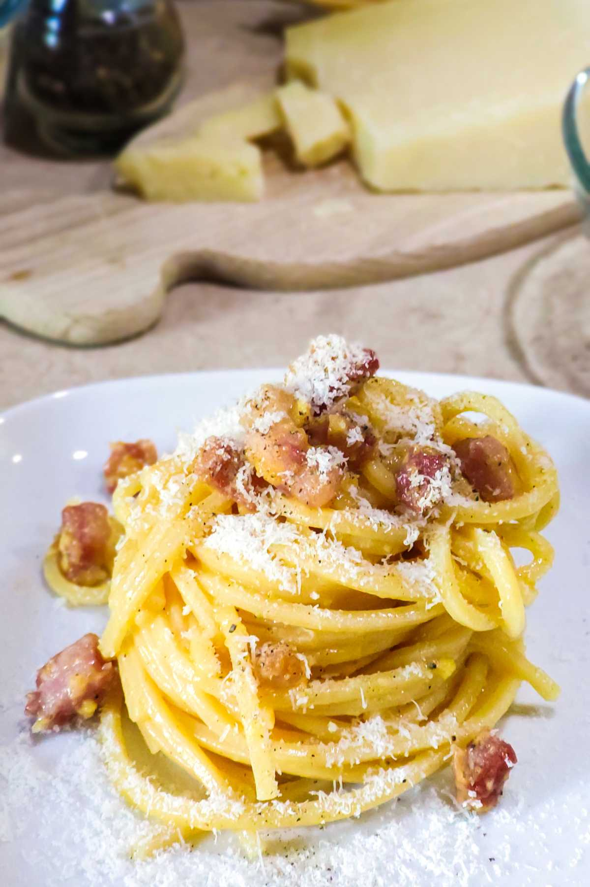

Explore our collection of delicious recipes from around the world. Whether you're craving Italian pasta, Japanese sushi, or Mexican tacos, we have something for every palate. Try out our recipes and bring the taste of the world to your kitchen!
Italian Pasta Carbonara
A classic Italian dish made with eggs, cheese, pancetta, and pepper. It's simple yet incredibly flavorful.

Enjoy a delicious plate of Pasta Carbonara!
RECIPE:
200g spaghetti
100g pancetta
2 large eggs
50g grated Parmesan cheese
Salt and pepper to taste
Instructions: Cook the spaghetti according to package instructions. In a separate pan,
cook the pancetta until crispy. In a bowl, whisk together the eggs and Parmesan cheese. Drain the spaghetti and return it to the pot. Add the pancetta and egg mixture to the spaghetti, tossing quickly to combine. Season with salt and pepper, and serve immediately.
Japanese Miso Soup
A traditional Japanese soup made with miso paste, tofu, and seaweed. It's a comforting and nutritious dish.
Warm up with a bowl of Miso Soup!
RECIPE:
200g miso paste
100g tofu
2 large eggs
50g grated Parmesan cheese
Salt and pepper to taste
Instructions: Cook the miso paste in hot water until dissolved. Add tofu and seaweed, and simmer for a few minutes. Serve hot.
Indian Butter Chicken
A rich and creamy Indian dish made with tender chicken in a spiced tomato-based sauce. It's perfect for a cozy dinner.
Indulge in the flavors of Indian Butter Chicken!
RECIPE:
500g chicken breast
200g tomatoes
2 large eggs
50g grated Parmesan cheese
Salt and pepper to taste
Instructions: Cook the chicken breast until tender. In a separate pan,
cook the pancetta until crispy. In a bowl, whisk together the eggs and Parmesan cheese. Drain the Chicken and return it to the pot. Add the pancetta and egg mixture to the chicken, tossing quickly to combine. Season with salt and pepper, and serve immediately.
Thai Green Curry
A fragrant and spicy Thai dish made with coconut milk, green chilies, and aromatic herbs. It's a perfect balance of heat and flavor.
Experience the bold flavors of Thai Green Curry!
RECIPE:
200g coconut milk
100g green chilies
100g Thai basil leaves
50g red chili peppers (optional)
Salt and pepper to taste
Instructions: The key is to fry the paste in coconut cream
to release its aromatic oils before adding the rest of the ingredients